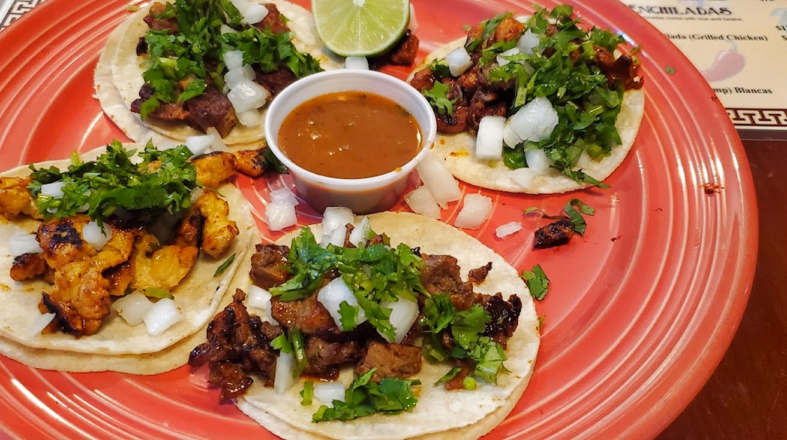

Chili Verde
A Mexican comfort-food classic and a longtime guest favorite.
BIENVENIDOS A DON PERICO
Bring your family. Bring your appetite. Settle in for authentic Mexican favorites and a warm Tehachapi welcome.
Good food. Great company. Everyone’s welcome.

FROM OUR KITCHEN
Comforting classics, sizzling favorites, and something for everyone at the table.
A Mexican comfort-food classic and a longtime guest favorite.
A crowd-pleasing plate made for your next sit-down meal.
Traditional Mexican meatball soup that feels like home.
Start your day your way, with a relaxed meal around the table.
MAKE IT A TRADITION
TUESDAYS + THURSDAYS
Taco days are better together. Bring the whole crew and ask about our current taco special.
Ask about taco specials ↗WEEKDAY HAPPY HOUR
Signature margaritas, draft beer, and a full bar. Ask us about today’s happy-hour offers.
Enjoy responsibly. Alcohol service for ages 21+.SUNDAY BRUNCH
Make room for a Sunday gathering with family, friends, and your breakfast favorites.
Call for brunch details ↗YOUR PEOPLE. OUR TABLE.
Family-owned and rooted in the Tehachapi community, Don Perico is a place to share a meal and make a memory.
Our dedicated banquet room welcomes birthdays, family reunions, and private parties. Call to discuss your group and availability.
From local weddings to private events, ask about catering options for your next gathering.
SAVE YOU A SEAT?
Call for current hours, pickup orders,
and event availability.